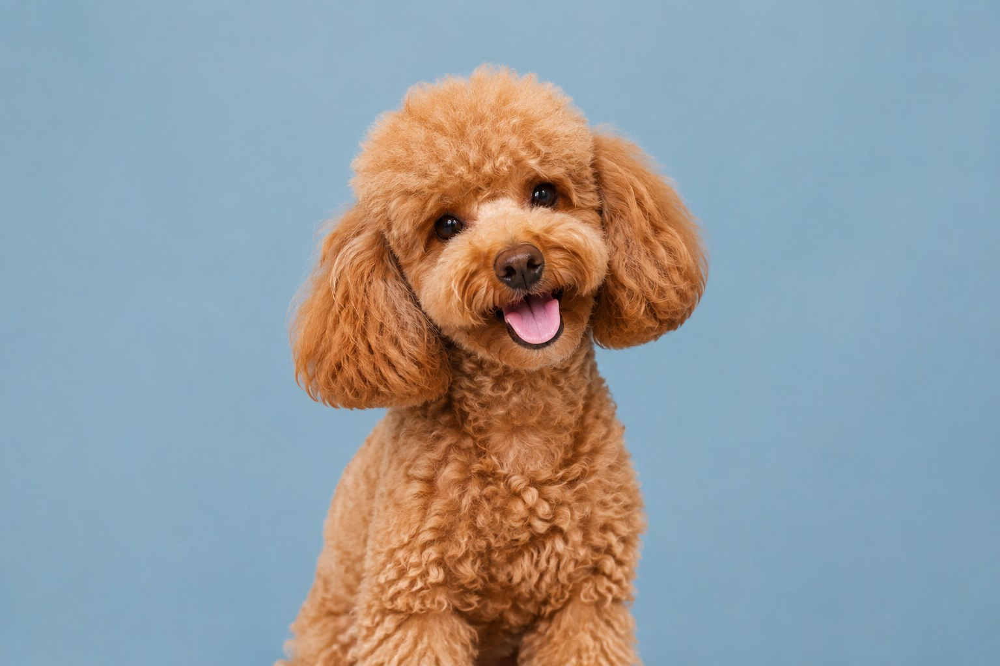

Hundepflege mit Ruhe
Einmal fein,
Einmal fein,
bitte!
Vom dichten Unterfell bis zur feinen Locke. Wähle den Felltyp deines Hundes für einen Blick auf die passende Pflege.
- Lockig · Wir besprechen die Wunschlänge und prüfen, wie gut sich die Locken durchkämmen lassen.
- Dichte Unterwolle · Wir lösen lockere Unterwolle mit einer zum Fell passenden Bürste.
- Kurz & glatt · Sanfte Wäsche und eine weiche Bürste helfen, lose Haare zu entfernen.
